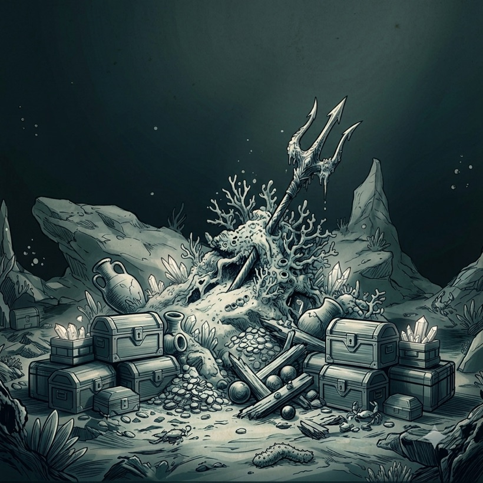

Deep Alive Odyssey
The answers aren't
The answers aren't
on the surface.They're at the bottom.
Abyssey is an AI platform that descends through the noise — from surface signal to the truths waiting on the seafloor of your data. Every query is an odyssey.
↓ Scroll to descend
This is where most tools lose the light.
Reasoning that holds where others implode.
What Abyssey surfaces from the deep
Sonar
Maps the depth of your data so nothing important stays hidden in the dark.
Pressure-tested
Models that keep their reasoning intact under the hardest, deepest problems.
Salvage
Brings the treasure back up — the one answer that was worth the dive.
You're almost at the floor.

You've reached the floor.
Every odyssey ends with what you came for. Plant your trident — and bring the deep back to the surface.